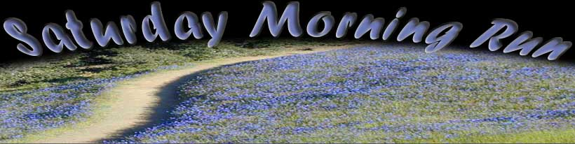

| 
Pick a Year About Archive Contact 2006December 30, 2006 - Lincoln Fairly
December 23, 2006 - Cataract Creek
Merry Christmas
December 16, 2006 - Redwood Creek
After the first big rain of the Winter last week, we thought maybe the salmon might be making their run up Redwood Creek into Muir Woods. We spotted one female. Some years there are dozens of salmon as far up as the bridge that's out over Fern Creek. One more good storm and there could be lots more.
December 9, 2006 - Coastal Trail Loop
One of our great routes with the least climbing is to go across Matt Davis and up Nora to West Point, then Rock Spring Trail to Mountain Theater, Down upper Cataract Trail crossing over to Coastal Trail at Laurel Dell and then to Pan Toll and back on Troup 80 Trail.
December 2, 2006 - High Marsh Trail
November 25, 2006 - Quad Dipsea
The Saturday morning runners put in a great showing with a 1st, 3rd, 6th, and all showing impressive mettle. Here are some highlights: - Scott Dunlap has posted a great description of the race with photos on blogspot.com here. Scott finished 33rd. - Here's a video of Jamie making the half-way turn at Old Mill Park. This really captures the enthusiasm and spectacle of this year's Quad. - A little Quad Dipsea hype from KRON channel 4 conceived and produced by Jim Sugar and staring Bob here. - Results here.
November 18, 2006 - Bootjack
Bootjack Camp was so named because people thought the grassy hillside above it looked like a boot jack.
November 19, 2006 - 101st Dipsea Anniversary
This was the 101st anniversary of the first running of the Dipsea Race. A number of the Saturday morning runners ran the course out the Stinson both to commemorate the day, and as a relaxing enthusiasm builder for next week's Quadruple Dipsea (not that we need any more enthusiasm than is already bubbling out of this bunch in practically every sentence that they speak).
November 11, 2006 - Steep Ravine
November 4, 2006 - Audubon Canyon
Audubon Canyon Ranch was founded in 1962 to preserve one of the largest heron breeding areas on the west coast. Herons feed in Bolinas Lagoon and nest in the redwoods in the canyon. Before it was developed, there was a similar breeding area in Madrone Canyon in Larkspur. The birds would feed in the marshes where the Corte Madera and Village shopping centers are now. You can read about Audubon Canyon Ranch here http://www.egret.org/history.html.
October 31, 2006 - Tomas' Birthday
Tomas has reached the age where it's prudent to have a trained medical professional on hand whenever possible.
October 28, 2006 - Wheeler Trail
September 29, 2006 - Yosemite Revisited
We had too many pictures for the first go-round. So... here are some more. These are from the Glacier Point run on Friday. Glacier Point is where the Yosemite Fire Fall was staged until 1968. A huge bon fire was burned to coals and then pushed off the 3000 foot cliff after dark. There's a great history and photos of this Yosemite tradition here: http://firefall.info/
September 21, 2006 - Sausage Night
Every year the Pelican runners cook sausages and drink beer at Tomas' cabin following a run from Mountain Home.
October 22, 2006 - Table Rock
Table Rock is a level eagle's nest of a viewpoint about two-thirds of the way down Matt Davis Trail. It has a great view of Stinson Beach and town.
October 15, 2006 - DBICCR #3
The Dipsea Boy Invitational Cross County Race works its magic by using a point to point (or point to point to point) format, with the points being different every year. The actual running is like dropping your Dipsea application in the box, it's just a small step after the real work of concocting a convincing story. With the DBICCR, the real effort happens well in advance and involves skills in cartography and orienteering, intuition, experience, the stashing of fins, surf boards, outboard motors, etc., and Tecnu.
Results are here:
A note from Dipsea Boy, possibly to be followed by lengthy rantings here:
An account from Roy on last minute (and I mean after the race had started) rule changes, and the winning route here: Roy's Account
October 14, 2006 - Escape from Alcatraz (sort of...)
The Escape from Alcatraz triathlon was happening during our run so we stopped to talk with the volunteers at the Cardiac aid station. It's an intriguing event involving a swim from Alcatraz to San Francisco, a bike ride to Old Mill Park in Mill Valley, and a Double Dipsea. A few of us sounded pretty enthusiastic about next year. Will we do it?
October 7, 2006 - Not Yet Named Trail
A jewel of a new trail. We're working on the name.
The Saturday Run does Yosemite!!!
Wow, everybody!!! Thanks for being there - what a fantastic time! Thirty-one of us in sixteen cabins for three great adventures and a million laughs. Let's do it again!!!
The Gazette article on our Yosemite trip is here. October 1, 2006 - Jack Kirk's 100th Birthday
Yosemite was just a stop on the way to Jack's 100th. As we were getting ready to leave the party we asked George, who had been leading the proceedings, if we might stop by Jack's land for a look around. "Sure", he said, "would you like one of the youngsters to show you the place?" So Chris, Jack's Grand Nephew, took us out for a look see. Contrary to descriptions I'd heard before, Jack's place is not full of junk. For starters, he's got some 500 acres of land - close to a square mile - and most of it is wilderness. The part he lived on has several sheds of various construction and many collections of really great old stuff. And then there's the lake, and the stream, and the granite domes, and the Indian grinding pits...
September 23, 2006 - Off the Beaten Track
One of the great things about Mt. Tam. - you can run, ride, hike here for years and still find fantastic new things on a regular basis.
September 17, 2006 - Dipsea Beer Booth
Every year at the close of the Mill Valley Arts Festival, Dipsea folks gather at the beer booth to drink up the last of the brew and let out all that pent up Dipsea energy. Those who have won the treasured black shirts get to wear them, and do so proudly. This year in particular there was so much great energy it was like standing inside a generator at a power plant. If you have any more pictures from the beer booth please send them and I'll post them here for all to see. Thanks mailto:admin@satrun.songbirdsoftware.com. September 16, 2006 - Road Bike Mt. Tam Hill Climb
The Mt. Tam Hill Climb is a classic. Every year we run out to watch the finish. September 9, 2006 - Wheeler Trail
Wheeler Trail connects Hookooekoo Fire Road to Eldridge Grade. It's named for Alfred Wheeler, a San Francisco land owner, lawyer, and trail builder. He constructed the trail circa 1881. September 4, 2006 - Mt. Tam Hill Climb
The 2006 edition of this treasured classic. September 2, 2006 - Carson Falls
This is about as far from Mountain Home as we've ever started the run. Carson Falls is on the southwest flank of Pine Mountain above Kent Lake. We drove from Mountain Home to Ridgecrest Blvd., across Bolinas Ridge, (about as spectacular as you can get with the morning fog below - they don't film those car commercials up there for nothing), and down to Alpine Dam. August 26, 2006 - Headlands 50K
Tamalpa puts on the Headlands 50 kilometer race every August. It runs through lots of our favorite spots from Rodeo Lagoon to Mt. Tamalpais, Stinson Beach, and back. This year it was the National 50K Championship as well. Some of the Saturday run regulars raced while the rest ran out to Pantoll to cheer them on. August 19, 2006 - Champagne Social
These
two are moving to Basel, Switzerland for what sounds pretty much like a
fairy tale life. Ryan will be doing modeling and analysis of global
economic systems to keep life humming along for the rest of us, and
Sarah will be running through the Black Forest and possibly doing
research in genetics. They've both been regulars and favorites on the Saturday morning run for years. We had a little party in the woods to send them off as best we know how. August 12, 2006 - Summer
Sometimes, in the Summer, Coastal Trail stretches out in the sun while the fog sneaks in and nuzzles it from below. To be there on one of these misty, golden, summer mornings makes you feel like, well, like the people in these pictures. Archives
Maeve has some great pictures from a winter Saturday run in 1989. You can see them here. Tim sent in a couple from 1997 here, and you can read Tim's 2005 Gazette article here. August 5, North Palisade
Three Saturday morning regulars decided to head for North Palisade in the southern Sierra instead of Mt. Tamalpais this Saturday. Unfortunately, the usual photographer was among them so . . . For now we have pictures of what was more of a Saturday climb, (although the climbers did run - raced, actually - the last 6.5 miles). From our guide book, (Climbing California's Fourteeners by Porcella and Burns): North Palisade, elevation 14,242 feet, crown of the Palisade group, is an austere diorite monolith. Guarded on its northeast side by a large ice field and on its southwest flank by huge, sheer walls, North Palisade is the spectacular culmination of the incredible ridge known as the Palisades. As a peak, North Pal (as it is commonly known) is one of the most sought-after summits in all California. July 29, Many Trails
We headed for Potrero Meadow and then wandered around on the great little trails on that side including one we hadn't been on before, (and probably won't be on again). It is on the map but isn't really on the ground. July 22, Heat
It was already roasting hot at Mountain Home at 9 am. The smarter gang of six headed down into the cool of Muir Woods. The rest of us tried to reach a swimming hole on the back side that proved too far. July 15, 2006 - Toledo, Ohio
Ed from Toledo found us via the internet and showed up for the run. He ran the whole twelve miles with the long group, patiently waiting every time we stopped, and finished looking like he was ready for more. See you next time you're in town, Ed. July 27 update: Got a note from Ed here: Ed's note. July 8, 2006 - Van Wyck Meadow
Van Wyck Meadow is named for Sidney M. Van Wyck, Jr., president of the TCC in 1920-21. He helped promote the idea of Mount Tamalpais State Park. The large rock in the center is called Council Rock and was apparently the site of numerous meetings at the time. The meadow was a popular picnic spot in the 20's and 30's. For years there was a sign stating "Van Wyck Meadow, population 2 Steller's Jays" at the back of the meadow but it's been gone for a while. July 1, 2006 - Pilot's Knob
Pilot's Knob is that great hill above Lake Lagunitas that looks like the cockpit of an airplane. A long ways from Mountain Home, but a doable adventure from Rock Spring and we discovered one of the mountain's most striking features along the way - Split Rock. Grimm's Fairy Tales has nothing over Split Rock. June 17, 2006 - Frank's Valley
Frank's Valley runs from Muir Woods to Muir Beach. It has two spectacular redwood canyons leading up from its north side - Muir Woods and Kent Canyon. To the south is an almost impenetrable tangle of oaks, bays, coyote brush and poison oak. Lots of poison oak. More poison oak than you can shake a bottle of Tecnu at. The valley itself follows the course of Redwood Creek through dense temperate rainforest and open grassland with occasional nettles and, did I mention poison oak? June 11, 2006 - Dipsea
Not much of a run this Saturday - most of us were saving it for the Dipsea on Sunday. June 3, 2006 - Mountain Play
Well, the usual photographer forgot his camera for the Saturday run. There were a few other folks with cameras so maybe some photos will show up. In the meantime, here are a few pictures from the Mountain Play performed the next day at the Mountain Theater, just a few steps from where we began the run at Rock Spring. May 27, 2006 - Azalea Meadow
We didn't get the blue fields of Lupine this year, but the azaleas are in full bloom as are many other flowers. May 20, 2006
No time to write. Got to go practice The Swoop. May 6, 2006 - Copper Mine
The scenic Wilkins Ranch, at the head of Bolinas Lagoon, witnessed three waves of mining fever on the upper slopes of Bolinas Ridge. Three copper mining companies organized in 1863, following the clear cutting of redwoods from the slopes of Olema Valley. Only one, in Union Gulch, produced any substantial ore, but failed due to low copper prices and high transportation costs for smelting. The Chetco Mining Company, more successful than its predecessors, closed its doors in 1918 as the last operation to work the vein. The mine’s adit and shaft, having long since been secured, are accompanied by the mining road, concrete foundations and cabin site, a rusty boiler and cable, and other large debris. The paragraph above is from http://www.nps.gov/pore/history_lands.htm. An indication that the Tuesday night Pelican runners just might have too much time on their hands here... April 29, 2006 - Air Force Base
Construction of the Mill Valley Air Force Station, (Mount Tamalpais Radar Site), began in 1950 and was completed in 1952. It included 62 buildings and perimeter fencing and guard posts. There was a swimming pool and bathhouse, tennis courts, bowling alley, and theater. The 666th AC&W (Aircraft Control and Warning) Squadron was stationed here. The radar dome buildings housed aircraft detection radar and in 1967 SLBM (Submarine Launched Ballistic Missile) detection sets were added. An Army Air Defense Command Post was here from 1959 until 1974. It controlled all of the Nike-Ajax and Nike-Hercules missile batteries in both the San Francisco and Travis AFB Defense Areas. In 1983 operation of the radar systems was transferred to the Federal Aviation Administration and administration of the base’s land was taken over by the Park Service. See the following website for more detail: http://www.militarymuseum.org/MillValleyAFS.html April 22, 2006 - Birthdays+
Well, once again the photojournalists came up short and we didn't get any pictures of the Saturday run this week. Next week should be a good one for wildflowers and we'll likely get some good photos. There were two other events attended by many Saturday runners this weekend. One was Carmen's birthday hike Saturday evening, and the other was Stan's 5th annual 39th birthday hash on Sunday afternoon. Also included is a taste of what a Yosemite Saturday Morning Run could be like. April 15 (& 16th), 2006 - Mill Valley White Water
The Saturday Run went up Fern Creek Trail to East Peak, then across North Side Trail and to Potrero Camp, then up Benstein Trail and back on Matt Davis Trail - one of our favorite routes. Unfortunately, only one photo was taken. However, the following day, with the weather being what it's been and the water being what it is, three of the runners from the previous morning decided to run Old Mill Creek - in kayaks. Now you may not be aware, (we certainly weren't), that this particular waterway crosses under certain obstacles - Miller Avenue just down from the Mill Valley square, for instance - in ways that are not obvious to the passers by above. For a paddler, this can lead to situations where one's immediate future is somewhat in question... April 8, 2006 - Dipsea Opening Day
Dipsea Boy recounts the origins of Dipsea Opening Day here. The tradition goes back a number of years. Every year, in early Spring, the Saturday Runners head down to the Muir Woods parking lot at the foot of Dynamite where persons having Dipsea wisdom share it with the group. We then run up to the top of Cardiac, declaring Dipsea season to be officially open. April 1, 2006 - Kent Trail
The great thing about Kent Trail is you can follow it down for miles taking side loops like Cross Country Boys and Stocking trails without ever doing any climbing. Then you come back along Alpine Lake via Helen Markt Trail and finally earn back all that elevation on Cataract Trail - but the water in Cataract Creek right now is just too spectacular not to love the climb. March 25, 2006 - Secret Spot
There are many. This is one. March 18, 2006 - Tucker Trail
I'm sitting in Peet's Friday morning talking with Hans. He's telling me how great Gmail is while, in the back of my mind, I'm trying to work out a route from Mountain Home to a wonderful little path I stumbled across above Phoenix Lake. The problem I'm having is finding an interesting way to get to the path. Then Hans says something like, "Did I tell you? I went hiking yesterday with a friend. We found a really great little trail above Phoenix Lake." No way! Can it be that he just found the same trail I just found? I turns out his trail isn't my trail - instead, it leads to my trail! That afternoon I run out to have a look, and the next morning the group does both trails - waterfalls and all - neither one on the map. Oh, and we also found the meaning of life - check the photos. March 11, 2006 - More Snow on Tam
There's a great video here that shows what it's like hanging out with this bunch from a middle-of-the-group perspective. Sure wish I'd been there. Saturday Morning Run History by Janet Furman BowmanJanet wrote this wonderful article about the history and character, (and characters), of the Saturday Morning Run. It appeared in the January, 1996 Gazette. It leaves you feeling that if you could bottle all the stories and laughs and adventures and good times that have been had over the last 35 years, you'd have enough to cheer up the whole state. You can read it here. March 4, 2006 - Ted Cooper Bridge
Ted Cooper had a camp and a small lake just upstream of his namesake bridge in the 1920's. The bridge has been rebuilt many times over the years by various individuals and groups. The current bridge was built by a group of boys led by one of the MMWD employees at an Earth Day celebration . February 18, 2006 - Snow on Tam
Friday afternoon a dusting of snow turned Tamalpais white at the West Point Inn elevation and up. Footsteps in the East Peak parking lot and around the peak on Verna Dunshee Trail left inch-and-a-half deep impressions. By Saturday morning it was down to patches but we did get a few snow flurries during the run. February 11, 2006 - The Throne
The Throne is in a sunny, open view spot in a hobbit landscape. There's a shrine here and people come to be with their thoughts among nature's best. Scraggly Sargent Cypress trees grow around boulders in fantastic shapes like a bonsai forest made life-size. The throne itself is a large armchair made of piled rocks. In the past it was a single chair but has recently evolved into a two-and-a-half seater. It faces the the setting sun. February 4, 2006 - Anchor Tree
Most of this run took place on trails not shown on the map. We did some normal stuff like Cataract Trail, Benstein Trail, Swede George Trail, parts of Kent and Stocking trails, but also things with names like Dipsea Boy Shortcut, Fairly Carvin', and Scary-Dude-With-The-Knife Trail. The Anchor Tree itself is an old Douglas Fir growing from the bank of a small stream. At some point it must have been knocked over and then sprouted what is now the main trunk from its middle; the original trunk forms the flukes of the anchor. Knowing how to find the Anchor Tree is a bit of a local knowledge test - like knowing how to find Music Camp was forty years ago. January 7, 2006 - Sarah's Birthday
Nailed to a tree overlooking the ocean, just off an obscure trail is a plaque dated Christmas Eve, 1969. It proclaims it's author's sincere love for his girlfriend. This was one of our stops on this run. There are other plaques around. There's the Aviator's Plaque near East Peak, another from 1992 dedicates Ted Cooper bridge, and another proclaims a small footbridge to be an Eagle Scout project. Supposedly the Hogan Tree, near Hidden Lake, had a plaque at one time. Now, no one seems to know which tree is or was the Hogan Tree. Speculation is that it fell years ago, plaque side down. There was also a plaque affixed to a stone pedestal at the end of a short trail near Van Wyck Meadow commemorating soldiers who died in World War I. Several years ago someone apparently thought it would look better on their wall, (or possibly on their ebay auction), and it went missing; the pedestal remains. |


/IMG_7382.jpg)